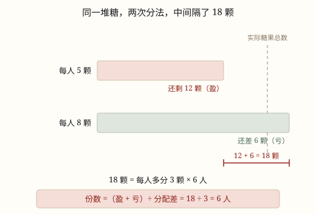

盈亏问题
两次分法的余缺之差，除以每份之差，就是份数；一盈一亏相加，双盈双亏大减小。
| 所属主题 | 解决问题 |
|---|---|
| 所属模块 | 数与代数 |
| 课标学段 | 第三学段（5~6年级） |
| 前置知识 | 带小括号的混合运算 |
| 核心素养 | 模型意识推理意识应用意识 |
课标要求
| 数与代数·数量关系 | 能运用常见的数量关系解决实际问题，能合理解释结果的实际意义，逐步形成模型意识和几何直观，提高解决问题的能力。 印刷第 24 页 行为动词：运用 |
|---|
说明
老师给同学们分糖果。每人分 5 颗，还剩 12 颗；每人分 8 颗，就少 6 颗。有多少个同学，一共有多少颗糖？两次分的是同一堆糖，糖没变，人也没变，变的只是每人拿几颗。
两次分法，每人相差 8 - 5 = 3 颗。要把每人的 5 颗提高到 8 颗，一共得多拿出 3 × 人数 颗糖。这些糖从哪儿来？第一次多出 12 颗，第二次还差 6 颗——从「多 12」走到「少 6」，中间跨过了 12 + 6 = 18 颗（图 1）。所以 18 ÷ 3 = 6 人。
这就是盈亏问题的全部结构：两次分配的差，对应总数的差。写成式子就是 份数 = 两次余缺的差 ÷ 每份的差。份数可能是人数、班数、车数、盒数，叫什么名字不重要，重要的是它是「被平均分的那些份」。
两次的余缺不止「一多一少」这一种。双盈：每人 4 棵多 9 棵，每人 6 棵多 1 棵，两次都多，多的程度不同，中间只隔了 9 - 1 = 8 棵，所以相减。双亏：每人 3 个少 8 个，每人 5 个少 26 个，两次都不够，缺的程度不同，中间隔了 26 - 8 = 18 个，也是相减。
于是三种情形可以统一成一句话：先看两次的方向，方向相反就相加，方向相同就相减；得到的总差再除以每份差。一盈一亏相加，双盈用大盈减小盈，双亏用大亏减小亏——不是三条要背的口诀，而是「两次之间隔了多远」这一个问题。
求出份数还要再走一步。糖果总数 = 6 × 5 + 12 = 42 颗，或者用第二次分法 6 × 8 - 6 = 42 颗，两条路必须算出同一个数。这一步代回去，既是求答案，也是检验。
使用场景
班级分书分本：每班 40 本还剩一些，每班 45 本又不够，问有几个班、一共多少本，是这道题最标准的场景。
物流装车：每车装 12 箱还剩几箱，每车装 14 箱又差几箱，问有几辆车、一共多少箱。
绿化分树苗：一批树苗按人分，每人 4 棵有剩余，每人 6 棵也有剩余，问有几个人、一共几棵。
饮食分水果：幼儿园分苹果，每人 3 个不够，每人 5 个更不够，问有几个小朋友、一共几个苹果。
活动分组和排座位：每组 6 人多出几人，每组 8 人又差几人，问一共有多少人——份数换了名字，结构完全一样。
注意点
先判断两次是「多」还是「少」。一盈一亏相加，双盈双亏相减。方向判断错，答案会差出一大截，而且往往还是个「好看」的整数，不容易被发现。
分配差要用「大数减小数」：8 - 5 = 3。不能拿总差去除总差，也不能拿人数、总数去减。
算出来的是份数，不是总数。题目问「一共多少颗」，还要代回任意一次分法再算一步。
两次分配的对象必须一样多。第一次按人分、第二次按组分，份数根本不是一个东西，就不能直接套。
代回去检验：用两种分法各算一次总数，两个结果必须相同。不同就说明加减用反了。
为什么是这样

图 1：剩下的 12 颗和差着的 6 颗，接起来正好够每人多分 3 颗
算理推导
把两次分法画成两条从同一点出发的横条（图 1）：上条是「每人 5 颗」用的糖，走到头还剩 12 颗；下条是「每人 8 颗」要用的糖，走到头还差 6 颗。
两条横条的终点之间隔着多远？从「多 12」退回到实际总数，再往前走到「少 6」，一共跨过 12 + 6 = 18 颗。这 18 颗就是两次分法在总量上的差。
为什么会有这 18 颗的差？因为第二次每人多拿了 3 颗，6 个人就多拿 18 颗。反过来想：18 ÷ 3 = 6，正好是人数。
双盈的情况（图 1 的变形）：每人 4 棵多 9 棵，每人 6 棵多 1 棵。两次都多，可第二次多拿的糖是从「剩余的 9 棵」里扣的，扣到只剩 1 棵，扣掉了 8 棵。中间只隔 8，所以用 9 - 1。
双亏的情况同理：每人 3 个少 8 个，每人 5 个少 26 个，两次都不够，第二次多缺了 26 - 8 = 18 个。缺口之间隔着 18，所以用 26 - 8。
三种情形归成一句：份数 = 两次余缺之间隔的距离 ÷ 每份的差。方向相反（一多一少）距离是两段接起来，所以相加；方向相同（都多或都少）距离是两段比长短，所以相减。
最后一步别丢：6 × 5 + 12 = 42，6 × 8 - 6 = 42，两条路都回到同一堆糖，说明 6 个人、42 颗糖是对的。
动手实验
拿 20 颗豆子和 4 个小盒（小盒代表「人」）。每盒放 3 颗，还剩 8 颗；每盒放 6 颗，还差 4 颗。把两次的结果记下来：盈 8、亏 4。8 + 4 = 12，正好等于 4 × 3——每个盒子多放 3 颗，4 个盒子就要多 12 颗。再用 12 ÷ 3 = 4 反算盒数，和桌上的小盒数一模一样。亲手摆一次，你就知道那个「相加」是从哪儿来的：不是规定，是两段距离接起来的长度。
按场景的例题
例 1（场景：校园生活） 给各班分练习本
学校给各班分练习本。每班分 40 本，还剩 25 本；每班分 45 本，就少 20 本。有多少个班？一共多少本练习本？
解：一盈一亏，先相加：25 + 20 = 45 本。每班相差 45 - 40 = 5 本，45 ÷ 5 = 9 个班。总数 40 × 9 + 25 = 385 本，检验 45 × 9 - 20 = 385。
答：9 个班，一共 385 本。
例 2（场景：物流运输） 仓库装车运货
仓库要把一批箱子装车运走。每车装 12 箱，还剩 8 箱；每车装 14 箱，就差 6 箱。有几辆车？一共多少箱？
解：一盈一亏相加：8 + 6 = 14 箱。每车相差 14 - 12 = 2 箱，14 ÷ 2 = 7 辆车。总数 12 × 7 + 8 = 92 箱，检验 14 × 7 - 6 = 92。
答：7 辆车，一共 92 箱。
例 3（场景：绿化照明） 园林组分树苗
园林组给工人分树苗。每人分 4 棵，还剩 9 棵；每人分 6 棵，还剩 1 棵。有多少个工人？一共多少棵树苗？
解：两次都多，是双盈，用大盈减小盈：9 - 1 = 8 棵。每人相差 6 - 4 = 2 棵，8 ÷ 2 = 4 个工人。总数 4 × 4 + 9 = 25 棵，检验 6 × 4 + 1 = 25。
答：4 个工人，一共 25 棵树苗。
例 4（场景：饮食与配比） 幼儿园分苹果
幼儿园给小朋友分苹果。每人分 3 个，还差 8 个；每人分 5 个，还差 26 个。有多少个小朋友？一共多少个苹果？
解：两次都不够，是双亏，用大亏减小亏：26 - 8 = 18 个。每人相差 5 - 3 = 2 个，18 ÷ 2 = 9 个小朋友。总数 3 × 9 - 8 = 19 个，检验 5 × 9 - 26 = 19。
答：9 个小朋友，一共 19 个苹果。
常用推论
一盈一亏：份数 = (盈 + 亏) ÷ 分配差，其中 分配差 = 两次每份数之差。
双盈：份数 = (大盈 - 小盈) ÷ 分配差。
双亏：份数 = (大亏 - 小亏) ÷ 分配差。
求总数：总数 = 每份数 × 份数 + 盈，或者 总数 = 每份数 × 份数 - 亏，两条路都要算得出同一个数。
方程解法：设份数为 x，两次分配是同一堆东西，列成 a x + 盈 = c x - 亏，解出的 x 就是份数。
和鸡兔同笼同一个模型：都归到「总量差 ÷ 每份差」。鸡兔同笼是脚的总量差，盈亏是余缺的总量差。
易错点
错每人分 4 棵多 9 棵，每人分 6 棵多 1 棵，算成 (9 + 1) ÷ 2 = 5 个工人。
为什么错两次都是「多」，属于双盈，中间隔的距离是 9 - 1 = 8，不是 9 + 1。相加是「一盈一亏」才用的。
正确(9 - 1) ÷ (6 - 4) = 4 个工人，4 × 4 + 9 = 25 棵。代回去：每人 6 棵时 6 × 4 = 24，还剩 1 棵，对得上。
错每人 3 个少 8 个，每人 5 个少 26 个，算成 (26 + 8) ÷ 2 = 17 个小朋友。
为什么错两次都「少」，是双亏，缺口之间只隔 26 - 8 = 18 个。把两个缺口接起来算，等于把「缺的」当成了「有的」。
正确(26 - 8) ÷ (5 - 3) = 9 个小朋友，3 × 9 - 8 = 19 个苹果。
错每人 5 颗多 12 颗，每人 8 颗少 6 颗，算成 18 ÷ 18 = 1 人。
为什么错把「两次余缺的差 18」又当成了分配差去除。分配差是每份的差 8 - 5 = 3，不是 18。两个 18 长得一样，说的却是两件事。
正确(12 + 6) ÷ (8 - 5) = 6 人。写成一行时把括号标清楚：(盈 + 亏) ÷ 分配差。
错算出 9 个班就写答案「一共 9 本」，把份数当成了总数。
为什么错题目问的是「一共多少本」，9 是班数。份数和总数是两个量，求出份数只是走了一半。
正确再代一次：40 × 9 + 25 = 385 本，并用另一种分法核对 45 × 9 - 20 = 385。
直观理解
把两次分配想成两根从同一处出发的绳子，量的是同一堆东西。一根量完还剩一截，一根量到一半就断了——剩下的那一截和差着的那一截，接起来正好等于每人多拿的总量，所以一盈一亏要相加。如果两次都剩，那就是两截都多出来，只能比一比谁长，所以要相减；两次都不够也一样，比的是两个缺口谁深。先看两段是「接起来」还是「比长短」，加减就不用背了。
一盈一亏先相加，双盈双亏大减小；再除每份差多少，人数总数都算好。